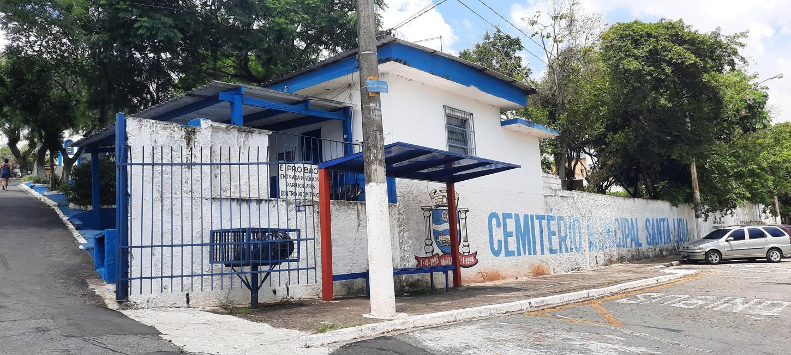

Cemitério Municipal de Mauá
O Cemitério Municipal Santa Lídia atua no atendimento à população de Mauá, oferecendo serviços relacionados a sepultamentos, administração de jazigos e orientação documental às famílias.
Nossa estrutura busca garantir organização, respeito e eficiência em todas as etapas do atendimento, proporcionando suporte adequado em momentos que exigem atenção e cuidado.


Destaques
Atendimento 24 Horas
O atendimento é realizado continuamente para atender às necessidades da população e garantir suporte nos momentos mais importantes.
Controle Documental
Todos os procedimentos seguem normas e exigências legais, assegurando organização, segurança e rastreabilidade das informações.
Fluxo Operacional
As etapas de atendimento são coordenadas para garantir eficiência, agilidade e respeito durante todo o processo.
Compromisso com Organização e Atendimento
O Cemitério Municipal Santa Lídia mantém procedimentos administrativos e operacionais voltados para a eficiência dos serviços prestados. A integração entre documentação, atendimento e gestão dos espaços contribui para um processo mais seguro, organizado e transparente para toda a população.